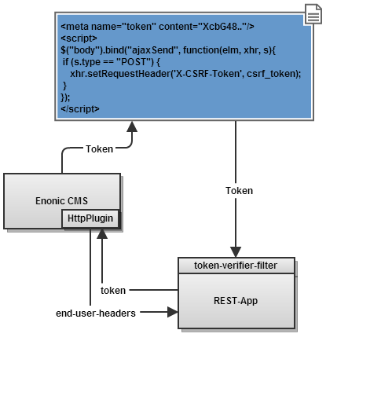

Stateless CSRF
In an Enonic portal environment
Ståle Pettersen / @kozmic
Context
-
Enonic portal
-
Single page Javascript-applications
-
JS apps calls REST-backend directly
-
REST-backend is stateless (doh!)
Flow

Stateless CSRF-token
- key = obfuscation-algorithm(static key, not-exposed-user-specific-data )
- CSRF-token = HMAC-256(key, user + day of year)
- Token valid for maxmimum 48 hours
- Protect static key
- Long static key to protect against offline bruteforce attack
Usage
- JS apps using jQuery for XHR doesn't need to do anything
- Backend server configure token-verifier-filter
- REST endpoints should never change state with: